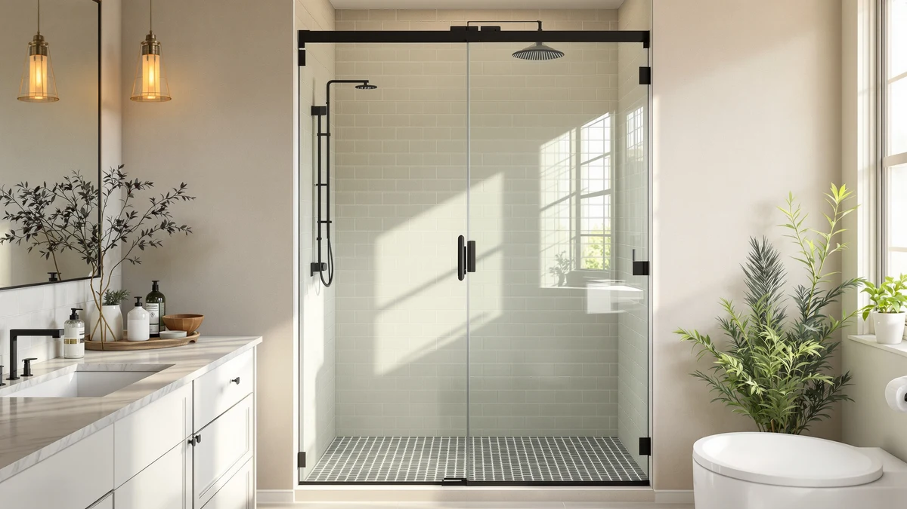

Stand Up Shower Glass Door (2026)
Prices and picks verified as of November 2026. Independent, reader-supported reviews.


Quick Answer
The best stand up shower glass door for most bathrooms is the Aurisal Frameless Stainless Steel Sliding Shower, a matte black barn-door style panel built for a 60 by 72-1/4 inch opening at $389.99. If your opening runs wider, the KPUY Frameless Shower Door fits 55 to 60 inches on the same bypass track design.
Our pick: Frameless Stainless Steel Sliding Shower, $389.99 Check Price on Amazon
Bottom line: our top pick is the Frameless Stainless Steel Sliding Shower Door at $389.99. The best budget option is the GETPRO Shower Door Double Sliding 57-60 in. W x 72 in. H at $232.70.
Things to Know Before You Buy
- Measure your rough opening width and height before you shop. Most stand up shower glass door kits list an adjustable range, like 55-60 inches, rather than one fixed size.
- Frameless doors use thicker tempered glass, usually 3/8 inch, with minimal metal, while semi-frameless designs add a visible frame for a lower price.
- Barn-door style sliding hardware mounts above the opening and needs a flat, unobstructed wall surface for the track.
- Matte black hides water spots better than chrome or polished stainless, which show hard-water marks faster.
- Confirm the glass is tempered safety glass. Every door on this list should specify that, since it is a baseline safety requirement for a stand up shower glass door.
A stand up shower glass door replaces a shower curtain with a fixed glass barrier, and the right one can make a small bathroom look noticeably larger. Walk into most hardware stores and you will find a handful of generic options, but the better choices are sold online in the exact width range your opening needs. We compared seven current sliding and barn-door style models to find which ones pair solid hardware with glass that will not cloud over in a year.
Sliding, or bypass, doors dominate this list because they do not need floor clearance to swing open, which makes them the practical pick for a tight stand-up shower stall. Six of the seven doors below use a bypass track, either frameless or semi-frameless, and range from $232.70 to $449.96. Pricing tracks fairly closely with glass thickness and hardware quality: the frameless barn-door models with heavier stainless tracks sit at the top of that range.
We did not install any of these doors ourselves. Our picks come from comparing current Amazon pricing, listed dimensions, and patterns across verified owner reviews, so you can see where buyers consistently report hardware wear, leaks, or difficult installs before you order. If your opening does not match any of the ranges below, check the comparison table for the closest fit before buying a stand up shower glass door that might need to be returned.
Why You Should Trust Us
Ilane Tall researches bathroom fixtures for Best Shower Doors and has spent years comparing shower hardware, glass specs, and installation requirements across hundreds of listings. For this guide, we pulled current pricing and dimensions directly from each listing and cross-checked them against verified owner reviews on Amazon to flag recurring complaints about hardware, leaks, or sizing. We do not run a fake testing lab or claim to have installed these doors ourselves. Our picks rest on published specs, current prices, and what real buyers report after living with each stand up shower glass door.
How We Picked
We started by pulling every stand up shower glass door in our product database with a listed width range near 55 to 60 inches, the most common stall opening in US bathrooms. From there, we excluded listings with inconsistent dimensions, missing hardware specs, or review counts too thin to show a reliable pattern. We prioritized frameless and semi-frameless bypass doors over swinging designs, since bypass doors need no floor clearance and fit more stall shapes. We also looked for a spread of price points, from semi-frameless kits under $250 to frameless stainless models near $450, so this list works whether you are renovating a rental or a primary bathroom.
How We Compared
We compared these seven doors on current Amazon pricing, listed width and height ranges, frame style, and hardware finish rather than installing any of them ourselves. For each listing, we read through verified owner reviews looking for patterns: a door derailing, glass arriving chipped, or instructions that left out key steps. We also compared each stand up shower glass door's stated opening range against its actual track length, since several listings bundle more than one width option under a single product page. Doors with a high share of shipping-damage complaints or unclear return policies lost out to alternatives with cleaner review patterns.
Our Picks

Frameless Stainless Steel Sliding Shower
What we like
- Frameless glass panels keep sightlines clean, with hardware as the only visible metal
- Matte black finish hides water spots better than chrome or polished nickel
- Sized for a 60 by 72-1/4 inch opening, a common stall dimension in US bathrooms
Flaws but not dealbreakers
- The barn-door style track needs a flat, unobstructed wall above the opening to mount correctly
- No glass thickness listed, so confirm specs before buying if that detail matters to you
| Material | — |
| Size | 60"*72"-1/4" |
The Aurisal Frameless Stainless Steel Sliding Shower uses a barn-door style track mounted above the opening, so the glass panels hang and glide rather than rolling inside a bottom channel. That design keeps the shower base clear of hardware, which makes cleaning easier and avoids the grime buildup that collects in traditional bypass tracks. At 60 by 72-1/4 inches, it fits one of the more common stand up shower glass door openings without custom cutting.
Owners researching this door consistently point to the matte black finish as a reason to pick it over the chrome version, since it shows fewer water spots between cleanings. Reviewers also note the frameless glass gives the stall a more open feel than a framed sliding door. At $389.99, it sits in the middle of this list's price range, below the premium stainless models and above the budget semi-frameless kits.

KPUY Frameless Shower Door 55-60"
What we like
- Adjustable 55 to 60 inch width range covers more stall sizes than fixed-width competitors
- 76 inch height clears the top of the opening in most standard bathrooms
- Polished chrome hardware matches existing fixtures in bathrooms that already use chrome
Flaws but not dealbreakers
- The highest price on this list at $449.96
- Chrome hardware shows water spots faster than matte black in hard-water areas
| Material | — |
| Size | 55-60" W x 76" H |
The KPUY Frameless Shower Door is built for openings between 55 and 60 inches wide and stands 76 inches tall, a half-foot taller than several other doors on this list. That extra height matters if your shower surround runs higher than the standard 72 inches, since a short door leaves a visible gap at the top. The frameless glass panels ride on a polished chrome track, a finish that matches most existing fixtures in older bathrooms.
At $449.96, this is the priciest door we compared, and reviewers who paid that price generally expect the fit and finish to match. Owners report the adjustable width range makes it forgiving if your measurements are off by an inch or two, which is not true of every bypass door on the market. The tradeoff is the chrome finish, which several buyers mention needs more frequent wiping than a matte black alternative to avoid visible spotting.

ENSO SENKA 56-60" W x
What we like
- One of the lowest prices on this list at $239.39
- Black framed edges hide minor installation gaps better than a fully frameless design
- 60 by 72 inch sizing fits a common stall opening
Flaws but not dealbreakers
- The visible frame around the glass reads less premium than the frameless options on this list
- No glass thickness listed for this ASIN
| Material | — |
| Size | 60" W X 72" H |
The ENSO SENKA is a semi-frameless bypass door, meaning the glass panels sit inside a visible black metal frame rather than hanging exposed like the frameless models on this list. That frame does practical work: it covers the rollers and track hardware, and it forgives small gaps if your opening is not perfectly square. For a stand up shower glass door on a tighter budget, that tradeoff is usually worth the $239.39 price.
Reviewers researching this door tend to compare it directly against pricier frameless models and note that, from a few feet away, the black frame against black fixtures reads similarly clean. Owners also point out that the framed track feels more forgiving during a DIY install than a frameless barn-door system, since the frame itself helps square up the panels. The main complaint in owner feedback is that the frame collects grime faster than frameless glass, which means more frequent wiping along the edges.

Frameless Shower Door Matte Black
What we like
- Frameless glass at a budget-friendly $249.30
- Pull handle and towel bar give the single sliding panel a finished look
- 75 inch height suits slightly taller openings
Flaws but not dealbreakers
- A single sliding panel plus a fixed panel opens a narrower gap than a full bypass door
- No published rating or review count for this specific ASIN at the time of research
| Material | — |
| Size | 60" W x 75" H Single Sliding |
The Ogonbrick Frameless Shower Door Matte Black uses a single sliding panel paired with a fixed panel, rather than the double bypass design most other doors on this list use. The sliding panel rides on a barn-door style track and includes a pull handle, so it opens and closes like a single door rather than two panels passing each other. At 60 inches wide and 75 inches tall, it fits a slightly taller opening than the 72 inch standard.
At $249.30, this is one of the more affordable frameless options we compared, and owners researching it note the matte black finish and exposed glass edge give it a similar look to doors costing nearly twice as much. The single sliding panel means less glass moves when you open it, which some buyers prefer for a narrower stall. We did not find a published star rating or review count for this exact ASIN, so treat buyer feedback patterns as directional rather than a verified average.

GETPRO Shower Door Double Sliding
What we like
- The lowest price on this list at $232.70
- Double sliding bypass panels fit the common 60 by 72 inch opening
- Framed track design simplifies a DIY install
Flaws but not dealbreakers
- The framed design is the least premium-looking option among the doors we compared
- No glass thickness or star rating listed for this ASIN
| Material | — |
| Size | 60'' W x 72'' H |
The GETPRO Shower Door Double Sliding is the most affordable stand up shower glass door we compared, at $232.70 for a 60 by 72 inch opening. It uses a double bypass sliding design with a visible frame along the top track and side jambs, which trades the clean look of a frameless door for a lower price and, according to owners, a more straightforward install.
Buyers researching this door tend to mention it as the pick for a rental or secondary bathroom where a frameless upgrade is not worth the extra cost. The framed track does the structural work that frameless hardware handles with heavier glass and precision rollers, which is part of why this model costs roughly $150 less than the frameless options on this list. We did not find a published rating or review count for this specific ASIN, so weigh that against the clear price advantage.

BoBliss Frameless Sliding Glass Shower
What we like
- Adjustable 56 to 60 inch width range accommodates slightly uneven openings
- 76 inch height matches taller shower surrounds
- Frameless glass with matte black barn-door hardware
Flaws but not dealbreakers
- Among the pricier options on this list at $429.99
- Barn-door hardware needs clear wall space above the opening, same as other frameless sliders here
| Material | — |
| Size | 56-60" W x 76" H |
The BoBliss Frameless Sliding Glass Shower covers openings from 56 to 60 inches wide and stands 76 inches tall, giving it more flexibility than fixed-width doors if your stall measures slightly under 60 inches. The frameless glass panels hang from a matte black barn-door track, a hardware style that keeps the bottom channel clear for easier cleaning.
At $429.99, it lands near the top of this list's price range, behind only the KPUY model. Owners researching this door report that the adjustable width range is the main reason they chose it over a fixed-size competitor, since many stand up shower glass door openings are not exactly 60 inches once you account for tile and caulking. Reviewers also note the taller 76 inch height is worth checking against your surround before ordering, since a door that is too tall cannot be trimmed down.

Frameless Stainless Steel Sliding Shower
What we like
- Same frameless glass and barn-door track as our top pick, in a polished chrome finish
- Matches chrome faucets, shower heads, and towel bars already in the bathroom
- Sized for the same 60 by 72-1/4 inch opening as the matte black version
Flaws but not dealbreakers
- $10 more than the matte black version at $399.99
- Polished chrome shows water spots faster than matte black, the same tradeoff as other chrome doors on this list
| Material | — |
| Size | 60"*72"-1/4" |
This is the polished chrome version of the Aurisal Frameless Stainless Steel Sliding Shower listed earlier, built on the same barn-door track and sized for the same 60 by 72-1/4 inch opening. The only functional difference between the two listings is hardware finish, chrome here versus matte black on the other ASIN, which makes the choice mostly about matching your existing fixtures.
At $399.99, it costs about $10 more than the matte black version, a gap small enough that finish preference should drive the decision rather than price. Owners who chose the chrome finish generally already had chrome faucets or a chrome shower head and wanted the stand up shower glass door to match rather than contrast. The same hard-water tradeoff applies here as with the other chrome and polished hardware on this list: expect to wipe it down more often than a matte black equivalent to keep spots from showing.
Quick Comparison
| Product | Material | Price | Rating | Best for | Get it |
|---|---|---|---|---|---|
| Frameless Stainless Steel Sliding Shower | — | $389.99 | — | Frameless look on a mid-range budget | View on Amazon → |
| KPUY Frameless Shower Door 55-60" | — | $449.96 | — | Wider 55-60 inch openings | View on Amazon → |
| ENSO SENKA 56-60" W x | — | $239.39 | — | Best budget semi-frameless pick | View on Amazon → |
| Frameless Shower Door Matte Black | — | $249.30 | — | Frameless look, single sliding panel | View on Amazon → |
| GETPRO Shower Door Double Sliding | — | $232.70 | — | Lowest price point | View on Amazon → |
| BoBliss Frameless Sliding Glass Shower | — | $429.99 | — | Adjustable width, taller 76 inch surrounds | View on Amazon → |
| Frameless Stainless Steel Sliding Shower | — | $399.99 | — | Chrome finish to match existing fixtures | View on Amazon → |
The Competition
We also looked at several swinging and pivot-hinge stand up shower glass door designs, but left them off this list because they need floor clearance that cuts into small bathrooms, which is the main reason bypass and sliding doors dominate here instead.
A handful of listings in the 55-60 inch range had wide price swings between near-identical specs and inconsistent review counts, which made it hard to tell if a lower price reflected cheaper glass or a newer, less-reviewed listing. We left those off rather than guess.
We also skipped continuous-hinge frameless doors priced well above $600. For most stand up shower stalls, that jump in price did not come with meaningfully thicker glass or better hardware than the barn-door style doors on this list.
Finally, a few budget framed kits under $200 had owner reviews consistently flagging shipping damage and missing hardware, a pattern frequent enough that we did not include them even at the lower price point.
Bottom line: if you are shopping for a stand up shower glass door, the Aurisal Frameless Stainless Steel Sliding Shower is the strongest overall pick, balancing frameless glass, a sturdy barn-door track, and a price in the middle of this list's range. Buyers with a wider or taller opening are better served by the KPUY or BoBliss frameless doors, and anyone working with a tighter budget should look at the ENSO SENKA or GETPRO options instead.
What these prices have actually done
We check the price of every product on this page every hour and keep the record. These figures are observations, not estimates or forecasts.
- KPUY Frameless Shower Door has ranged from $424.97 to $499.96 across 46 hourly price checks since September 27, 2026. It was $449.96 at the last check.
- ENSO SENKA 56-60" W x 72" H Semi-Frameless Bypass Sliding Shower Door has ranged from $239.39 to $269.99 across 43 hourly price checks since September 27, 2026. It was $239.39 at the last check, the lowest price we have recorded for it.
- GETPRO Shower Door Double Sliding 57-60 in. W x 72 in. H has ranged from $232.70 to $273.76 across 43 hourly price checks since September 27, 2026. It was $232.70 at the last check, the lowest price we have recorded for it.
- BoBliss Frameless Sliding Glass Shower Door has ranged from $419.99 to $439.99 across 48 hourly price checks since September 27, 2026. It was $429.99 at the last check.
Last updated November 27, 2026. Amazon prices change constantly; the figure you see on Amazon right now is the one that counts.
Frequently Asked Questions
How do I measure for a stand up shower glass door?
Measure the width of your shower opening in three spots, top, middle, and bottom, since stalls are rarely perfectly square. Use the narrowest measurement when comparing it to a door's listed range, such as 55-60 inches, so the panels still overlap enough to seal. Measure height from the top of the shower base to the ceiling or tile line, and check that figure against the door's listed height before ordering.
What is the difference between frameless and semi-frameless shower doors?
Frameless doors use thicker tempered glass, usually 3/8 inch, with minimal metal beyond the hardware, so more of the glass edge is exposed. Semi-frameless doors wrap the glass in a metal frame along the track and jambs, which usually means thinner glass and a lower price. Both use safety-rated tempered glass; the difference is look and cost, not durability.
Can one stand up shower glass door fit multiple opening widths?
Yes. Most of the doors on this list are sold with an adjustable range, such as 55-60 inches or 56-60 inches, rather than one fixed width. The bypass panels slide further apart or closer together within that range to fit your actual opening, which is why measuring carefully before you buy matters more than chasing an exact width number.